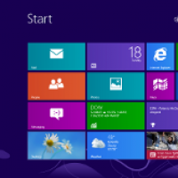
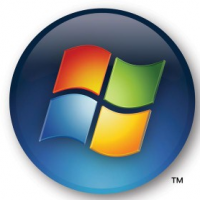

You need to be logged into Facebook to see your friends' recent activity.

Windows: It's over | ZDNet
833 people recommended this.

Microsoft's Windows 8 Plan B(lue): Bring back the Start button, boot to desktop | ZDNet
395 people recommended this.
Parallella: The $99 Linux supercomputer | ZDNet
254 people recommended this.
Facebook social plugin